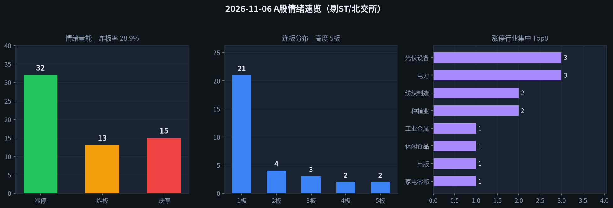

交易日 2026-11-06（周五） · 目标交易日 2026-11-09（周一） · 退潮加深·跌停扩散
情绪：退潮加深 涨停 32 · 跌停 15 炸板率 28.9% · 高度 5板| 票 | 昨动作 | 今收盘涨跌幅 | 判定 |
|---|---|---|---|
| 002156/002371 通富·华创 | 减仓/未持不加 | −2.87% / −0.18% | 对 |
| 002506 协鑫集成 | 开多极严≤5% | +1.57%（未板） | 部分对 |
| 603381 永臻股份 | 只观察/不加 | +10.03%（4板一字） | 对 |
| 002578/601599 闽发·浙文 | 不加（4板） | +10.11% / +9.96%（5板） | 对 |
| 600641 先导基电 | 只观察/不加 | +1.23% | 对 |
| 600206/603893 有研·瑞芯微 | 不加 | −0.26% / −2.36% | 对 |
一句话：减仓纪律与回避高度/脏板 对；协鑫脉冲未晋级，极严仓位上限保护了试错成本。改进（未回测）：退潮次日脉冲未晋级且板块涨停腰斩 → 次日降为只观察；高度杂毛继续板也不改「不加」。
涨停 32（昨83↓腰斩）、跌停 15（昨0↑冒头）、晋级率仅 13.3%、两市成交约 16578亿（昨约21180↓）；乐咕上涨716 vs 下跌4431、活跃度约 13.7%。昨光伏脉冲首板协鑫集成未晋级仅+1.6%，半导体中军通富/华创走弱；虽连板高度抬到 5板（闽发/浙文杂毛），但亏钱从昨主线扩到跌停扩散——定性 退潮加深（逼近冰点），绝非可接力的修复/启动。默认空仓或极轻，禁追高板。
| 指标 | 数值 | 备注 |
|---|---|---|
| 涨停家数 | 32 | 已剔 ST / 北交所；东财 raw32→clean32；乐咕真实涨停≈29 |
| 跌停家数 | 15 | 东财 clean15；乐咕真实跌停≈12 |
| 炸板家数 | 13 | 炸板池 clean（raw14剔1北交） |
| 炸板率 | 28.9% | 炸板/(涨停+炸板)=13/45；随涨停收缩下降，不代表修复 |
| 连板高度 | 5板 | 闽发铝业、浙文影业 |
| 连板结构 | 5板 2 / 4板 2 / 3板 3 / 2板 4 / 1板 21 | 高度杂毛在，低位量萎缩 |
| 昨日涨停数 | 83 | previous 池 clean |
| 晋级数 / 晋级率 | 11 / 13.3% | 昨涨停今仍涨停，晋级继续走弱 |
| 高度/主线亏钱样本 | 高争民爆跌停；通富−2.9%；协鑫未晋级；征和工业跌停 | |
| 两市成交额 | 约 16578亿（新浪：上证≈7726 + 深成≈8852） | |
| 涨停池成交额 | 约 194亿（仅涨停标的，昨约501↓） | |
读表一句话：跌停从0→15、涨停腰斩、成交与涨停额双缩 → 退潮确认加深；周一默认空仓等冰点后再看新首板质量，禁止高度接力。

附图：涨停 / 炸板 / 跌停柱状 + 连板分布 + 行业集中（emotion_20261106.png）
5板：闽发铝业（002578）、浙文影业（601599）—— 均有炸板回封，退潮期 不加。
4板：永臻股份（一字未炸）、鲁阳节能（末封晚、炸6次）—— 不加。
3板：春光科技、贝特利、新亚制程 —— 非清晰主线中军，不加。
行业 Top：光伏设备3、电力3，其余纺织/种植/出版等零散 → 高度杂毛 + 低位散板，没有可做的「空间龙/趋势龙/中军」主仓结构。电力首板封板尚可但板块辨识弱，不做第二仓。
主线判断依据 = 涨停池行业集中度 + 封板时间/封单/是否回封；概念涨幅榜未作为主论据。
情绪 = 退潮加深 → 默认 空仓，专项总仓建议 0%～≤5%；同时持仓建议 0 只；不追一字、不接力 3板及以上、不博弈跌停反抽杂毛。周末隔夜风险大，周一竞价先看昨涨停低开比例与跌停是否继续扩散。
| 动作 | 空仓观望（默认） |
|---|---|
| 进场 | 无。周一竞价若昨涨停大量低开＞5%、或跌停继续双位数扩散 → 全天不交易。 |
| 仓位 | 0% |
| 原因 | 涨停腰斩+跌停扩散+主线双熄火；退潮末段胜率差，优先保命。 |
| 作废 | 仅当盘中出现「新板块≥8家早盘干净首板、炸板率明显回落、跌停快速收窄」才允许把指令2升级为极轻试错。 |
| 动作 | 只观察 / 默认不加 |
|---|---|
| 标的 | 周一盘中新确认的「板块集中≥5家、早封未炸」首板（今日尚无合格主线，不点名追昨散板） |
| 仓位 | 0% |
| 原因 | 今日行业散乱，不把电力/光伏残留首板当主升；避免退潮假信号。 |
| 标的 | 603381 永臻股份（4板）、002578 闽发铝业（5板）、601599 浙文影业（5板） |
|---|---|
| 动作 | 不加 |
| 仓位 | 0% |
| 原因 | 高度杂毛；退潮期即使继续板也不接力。竞价打开直线砸 → 强化冰点信号。 |
| 动作 | 不加（由昨「极严开多」降级） |
|---|---|
| 收盘参考 | 2.58（+1.57%，未板） |
| 仓位 | 0% |
| 原因 | 光伏涨停数 10→3，脉冲未晋级；退潮加深期不二次试错同一熄火主题。 |
| 标的 | 002156 通富微电 / 002371 北方华创（仅对仍持仓者） |
|---|---|
| 动作 | 清仓 / 减完（未持仓 不加） |
| 退出 | 周一竞价或早盘反抽减/清；若低开＞3%且无承接 → 开盘附近清。 |
| 仓位 | 0% 目标 |
| 原因 | 退潮加深+半导体主线确认熄火；残留一律清。 |
| 标的 | 600641 先导基电、301697 贝特利、以及任何昨主线残留连板 |
|---|---|
| 动作 | 不加 |
| 仓位 | 0% |
| 原因 | 所属主线辨识已失；个股封得再干净也不单独赌残留高度。 |
20261106；乐咕活跃度交叉；个股开高低收来自新浪；两市成交额用沪深指数成交额加总（约16578亿）。未编造。